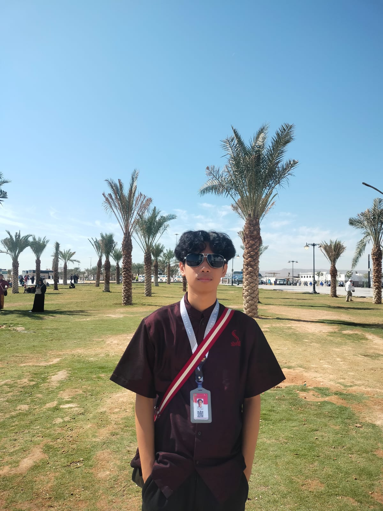
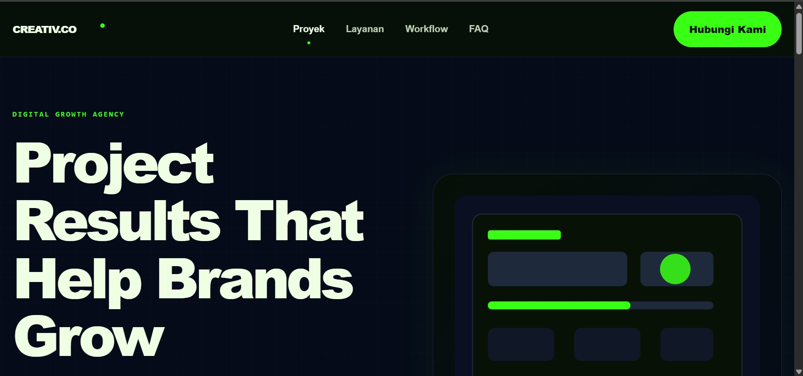
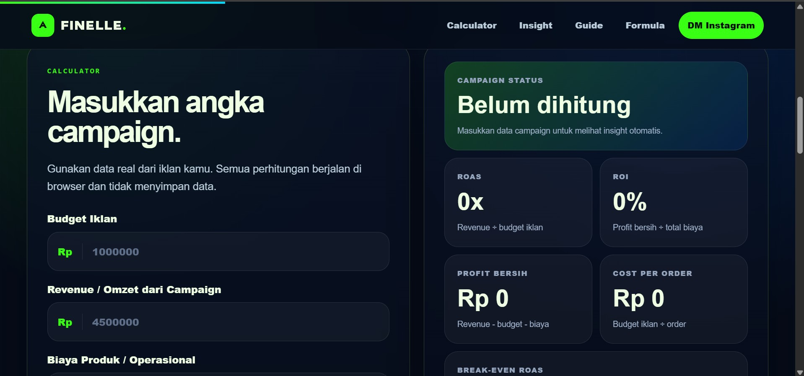
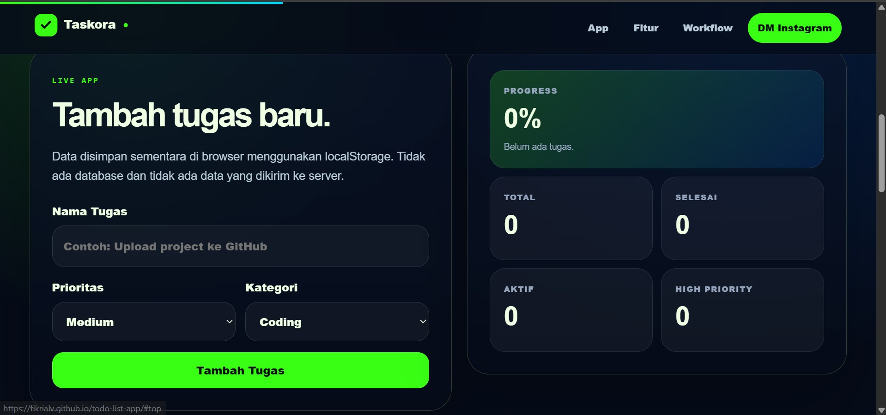

Frontend UI
HTML, CSS, JavaScript, responsive layout, animation, dan UI micro-interaction.
Saya Fikri Alvi Ramadhan, Full Stack Programmer & Data Analyst. Saya fokus membangun website, dashboard, dan sistem digital yang rapi, responsif, aman, serta siap dipakai untuk kebutuhan bisnis maupun personal brand.

Tech Stack
Dibuat lebih programmer: stack jelas, kemampuan jelas, dan visual tidak terasa seperti template portfolio biasa.
HTML, CSS, JavaScript, responsive layout, animation, dan UI micro-interaction.
PHP, Laravel, routing, controller, authentication flow, dan struktur database.
MySQL, Oracle, SQLite, desain tabel, query, relasi, dan reporting.
Python, SQL analysis, dashboard, visualization, dan pengambilan insight dari data.
Selected Work

Website digital agency untuk jasa pembuatan website, landing page, dan profile bisnis berbasis HTML, CSS, dan JavaScript.

ROI Ads Calculator untuk menghitung ROAS, ROI, profit bersih, cost per order, dan membaca performa campaign digital.

Website todo list kegiatan keseharian, kulaih, kerja dan lain-lain. jadi bisa dikerjakan seenak kamu
Workflow
Workflow ini dibuat untuk menjelaskan bahwa setiap project saya dikerjakan dengan urutan yang masuk akal: memahami tujuan, merancang pengalaman user, mengembangkan sistem, lalu menguji dan merilis hasil akhirnya. Jadi bagian workflow bukan sekadar hiasan, tapi menunjukkan pola kerja yang profesional.
Fokus ke tujuan, user, dan fitur inti sebelum masuk desain atau coding.
UI, logic, database, dan integrasi dikerjakan dengan struktur yang jelas.
Responsive check, performance, dan validasi flow dilakukan sebelum publish.
Hasil akhir siap dipasang ke GitHub Pages atau hosting sesuai kebutuhan project.
Menggali tujuan website, target user, alur bisnis, fitur utama, dan referensi visual agar arah project lebih akurat.
Membuat UI responsive, struktur halaman, komponen, database, dan integrasi fitur secara bertahap.
Cek tampilan mobile, performa dasar, link, animasi, dan user flow agar hasilnya tidak terasa setengah jadi.
Deploy ke GitHub Pages atau hosting, lalu siap dipakai, dikirim ke recruiter, atau ditunjukkan ke klien.
Journey
Mulai membangun website, portfolio, landing page, dan sistem sederhana.
Mengembangkan skill Laravel, MySQL, dashboard, dan analisis data.
Contact
Hubungi saya untuk project website, portfolio, landing page, dashboard, atau sistem berbasis Laravel dan database. Semua tombol di bawah langsung mengarah ke URL masing-masing.